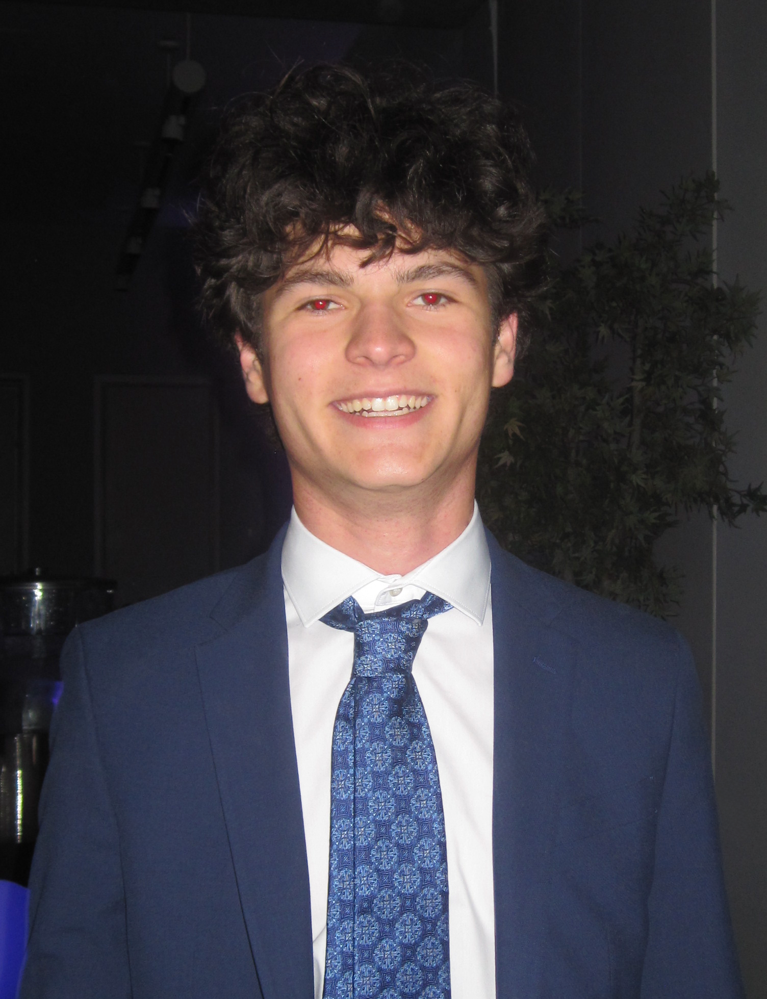
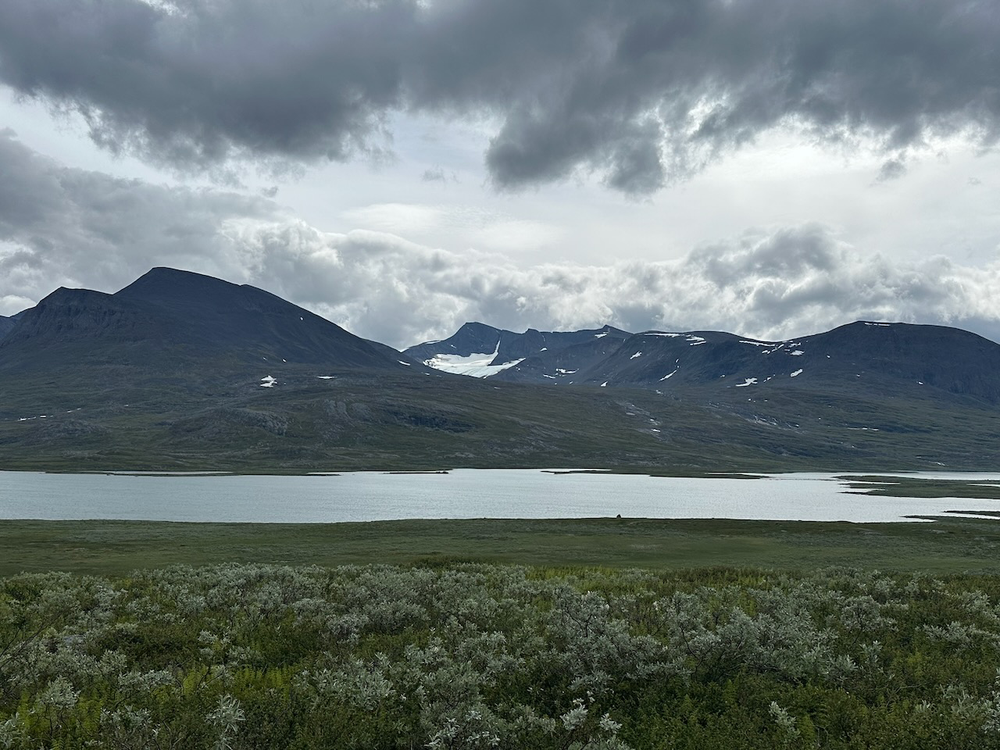

Charles Freidenreich
About
- Business undergraduate
- Interested in AI and business
- Record hike: 29 miles, 15,000ft elevation in one day
Now
- Studying business
- Working on AI projects
- Learning as much as I can, as quickly as possible

Scouting
- I really like the outdoors, I'm an Eagle Scout
- This is a photo of me on a backpacking trip in Sweden
